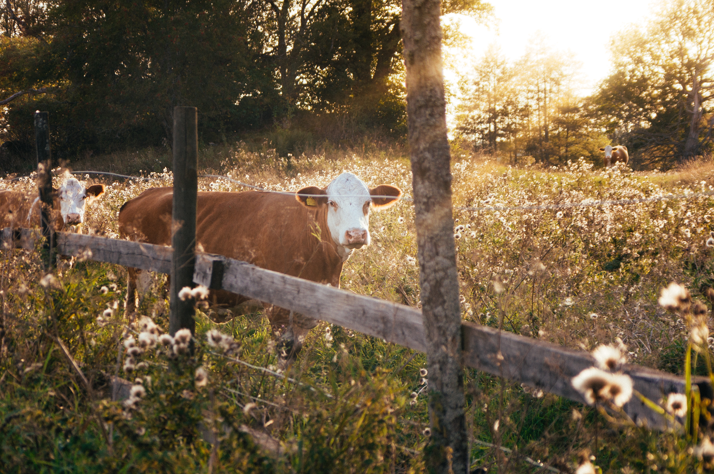
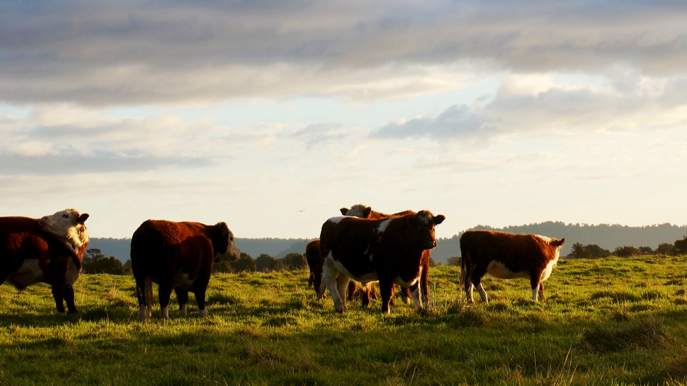

All of our cows are free-range, raised on non-GMO grass that we grow as cover crop from the land we farm. We do not feed our cattle corn or other grain forms because grain negatively affects their gut bacteria. Instead, our cows enjoy GMO-free grass that we grow. In addition, we do not give our cows antibiotics.


How it Works
Beef is sold either by the cow or half-cow. The price per live pound is $3.50. We haul the cow for processing to any packer plant of your choice within a 30-mile radius of the farm. Presently, this includes Royal Center Locker Plant, located at 104 N. Chicago St., Royal Center, IN 46978, and Parrott's Meat Processing and Catering, 603 Railroad St., Flora, IN 46929. Once the cow is processed, it is up to you to pick up the final product and pay the processing fee.